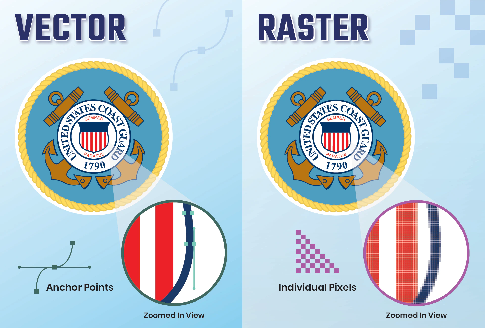

Vector Graphics Vs Raster Images
In this small blog post, I am going to explain the difference between Vector Graphics and Raster Images.
Overview:
Vector graphics are digital art that is rendered by a computer using a mathematical formula.Vector graphics are also known as scalable vector graphics (SVG). These graphics consist of anchored dots and connected by lines and curves, similar to the connect-the-dot activities you may have done as a kid. Raster images are made up of tiny pixels, or tiny dots that use color and tone to produce the image. Pixels appear like little squares on graph paper when the image is zoomed in or enlarged. As shown in this image below:
